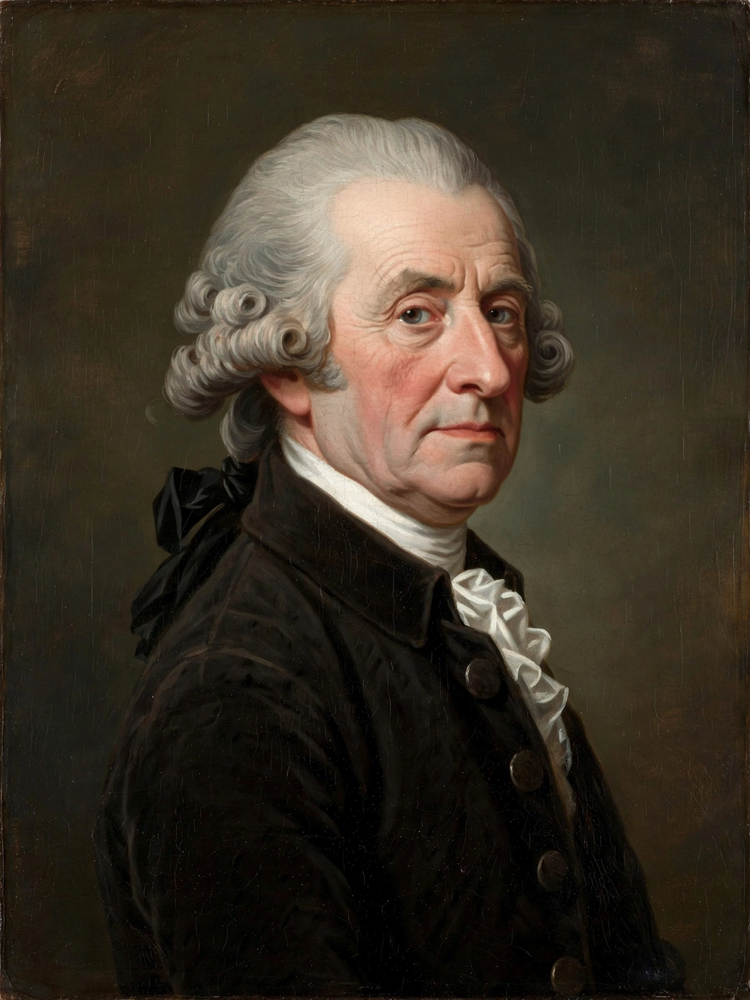

Adam Smith
| Adam Smith | |
|---|---|
| Born | 1723, Kirkcaldy, Scotland |
| Died | 17 July 1790, Edinburgh |
| Field | Political economy, moral philosophy |
| Notable works | The Theory of Moral Sentiments (1759); The Wealth of Nations (1776) |

[Image: portrait of Adam Smith, the Scottish economist, in 18th-century dress]Adam Smith (baptised 1723 – 17 July 1790) was a Scottish economist and philosopher who was a pioneer of political economy and a key figure of the Scottish Enlightenment. He is best known for An Inquiry into the Nature and Causes of the The Wealth of Nations (1776), conventionally regarded as the founding work of modern Economics, and for The Theory of Moral Sentiments (1759).
Life and work
Smith was born in Kirkcaldy, Fife, studied at Glasgow and Oxford, and became professor of logic and then moral philosophy at Glasgow. The Wealth of Nations, published the year of American independence, attacked Mercantilism and argued that national prosperity rests on the division of labour, free markets and Competition: individuals pursuing their own interest are led, as if by an "invisible hand", to promote the public good. His pin-factory example — ten workers dividing the tasks of pin-making vastly outproduce ten working alone — remains the classic illustration of specialisation.
Smith nevertheless supported public education, defence and public works, and warned about the mental effects of repetitive factory work and the political influence of merchants. After 1778 he served as a commissioner of customs in Edinburgh, where he died in 1790. His ideas underpin classical and neoclassical economics and the case for Free trade and Laissez-faire — though modern scholarship stresses how much more qualified his position was than later slogans suggest.